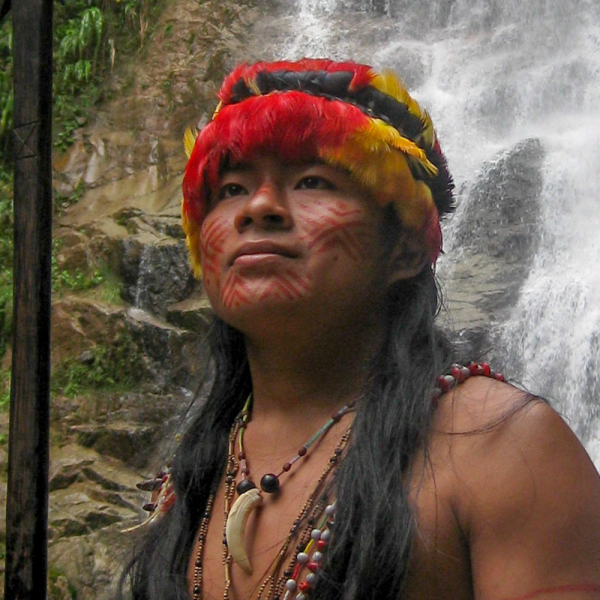
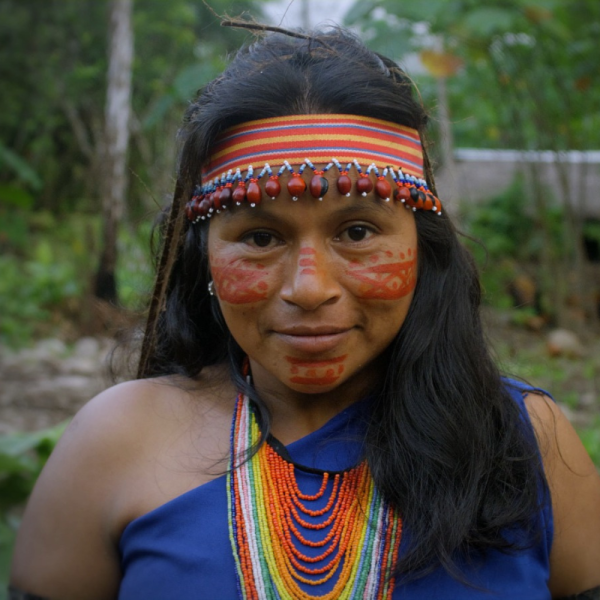
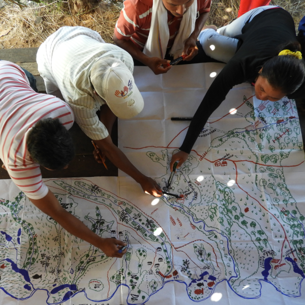
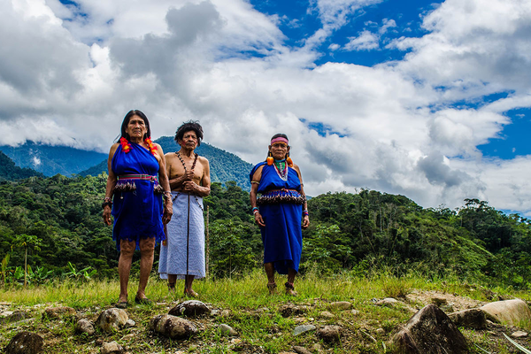

Comunidades locales
La conservación que nace en el territorio
Naturaleza y Cultura Internacional se fundó sobre una convicción fundamental: proteger la naturaleza y fortalecer las culturas vinculadas a estos territorios son esfuerzos inseparables.
En toda América Latina, los pueblos indígenas y las comunidades locales han cuidado durante generaciones los bosques, ríos y paisajes que consideran su hogar. Sus conocimientos, tradiciones culturales y profunda relación con el territorio orientan la forma en que los ecosistemas son protegidos y gestionados de manera sostenible.
Al trabajar junto a las comunidades y respaldar las prioridades de conservación que ellas mismas identifican para sus territorios, contribuimos a construir soluciones arraigadas en el contexto local y pensadas para perdurar.
Nuestro papel es acompañar estos procesos con herramientas, recursos y espacios de colaboración que fortalezcan la capacidad de las comunidades para cuidar sus territorios, preservar sus tradiciones culturales y mantener los ecosistemas de los que dependen.
El liderazgo local fortalece la conservación
Naturaleza y Cultura Internacional colabora con comunidades, gobiernos locales y organizaciones indígenas para identificar prioridades de conservación y diseñar soluciones que respondan a las realidades de cada territorio. Estas alianzas se construyen sobre la base de la confianza, el respeto y un compromiso compartido con la protección de los paisajes de los que dependen las comunidades.
Al trabajar de manera conjunta para establecer áreas de conservación, proteger cuencas hidrográficas, restaurar bosques degradados y resguardar la biodiversidad, impulsamos soluciones que cuentan con respaldo local y generan beneficios reales para los ecosistemas.
Cuando las comunidades participan directamente en la protección de los territorios de los que dependen, la conservación se vuelve más sólida, resiliente y duradera.

Donde se encuentran la cultura y la conservación
Naturaleza y Cultura Internacional reconoce que proteger la naturaleza también implica respetar a las culturas y comunidades que han cuidado estos territorios durante generaciones. La diversidad cultural, además, contribuye a la conservación de la diversidad biológica.
En las regiones donde trabajamos, los pueblos indígenas y las comunidades locales poseen un conocimiento acumulado durante generaciones sobre bosques, ríos, fauna y ciclos naturales. Este conocimiento ecológico ofrece valiosas orientaciones para la gestión sostenible de bosques, cuencas hidrográficas, fauna silvestre y suelos.
Nuestras alianzas se basan en los principios de Consentimiento Libre, Previo e Informado (CLPI), un estándar internacional de derechos humanos reconocido por las Naciones Unidas. Este principio garantiza que los pueblos indígenas tengan el derecho de tomar decisiones informadas sobre las actividades que puedan afectar sus tierras, territorios y recursos.

Fortalecer capacidades locales y liderazgo para la conservación
La conservación a largo plazo requiere más que áreas protegidas. También necesita personas con las capacidades, el conocimiento y los recursos necesarios para gestionar y cuidar sus territorios en el tiempo.
Naturaleza y Cultura trabaja junto a las comunidades para fortalecer sus capacidades locales mediante procesos de formación, acompañamiento técnico y gestión colaborativa de los recursos naturales. Estas alianzas permiten monitorear la biodiversidad, restaurar ecosistemas, gestionar áreas de conservación y desarrollar iniciativas que benefician tanto a la naturaleza como a los medios de vida locales.
Al invertir en liderazgo y capacidades locales, la conservación se convierte en un proceso impulsado por las propias comunidades, y no en una iniciativa impuesta desde fuera.

Por qué funciona la conservación
liderada desde lo local
Los esfuerzos de conservación son más efectivos cuando
quienes en el territorio
participan activamente en su
protección.
Los pueblos indígenas y las comunidades locales gestionan o tienen
derechos de tenencia sobre aproximadamente una cuarta parte de la
superficie terrestre del planeta. Diversos estudios muestran que
muchos de estos territorios albergan algunos de los ecosistemas
mejor conservados del mundo. También se ha encontrado que los
niveles de biodiversidad en territorios gestionados por pueblos
indígenas suelen ser iguales o incluso superiores a los registrados
en muchas áreas protegidas.
El enfoque de Naturaleza y Cultura se basa en esta evidencia. Al
trabajar en alianza con las comunidades y fortalecer su rol como
guardianes de la naturaleza, las soluciones de conservación se
vuelven más pertinentes, resilientes y sostenibles en el tiempo.
Cómo fortalecer la conservación liderada desde lo local
La conservación es más efectiva cuando las comunidades lideran la protección de los territorios y las fuentes de vida que consideran su hogar.
En Naturaleza y Cultura Internacional trabajamos para visibilizar y fortalecer el papel de los pueblos indígenas y las comunidades locales en el cuidado de los ecosistemas. A través de alianzas de largo plazo, acompañamiento técnico y colaboración con actores locales, impulsamos procesos de conservación que nacen desde los territorios y se sostienen en el tiempo.
Al reconocer y apoyar el liderazgo comunitario, contribuimos a proteger algunos de los paisajes con mayor biodiversidad del planeta y a asegurar que la conservación beneficie tanto a la naturaleza como a las personas que dependen de ella.
Conoce más sobre nuestro trabajo
Financieros y
Reportes Medios de
Comunicación Publicaciones Investigaciones Contáctanos Políticas de
Privacidad
Internacional
Naturaleza y Cultura
Internacional
es una
organización
no
gubernamental 501 (c) (e)
EIN: 33-0773524
Del Mar, CA 92014, USA Llámanos +1 (858) 259-0374 Escríbenos hola@naturalezaycultura.org Síguenos en Redes Sociales